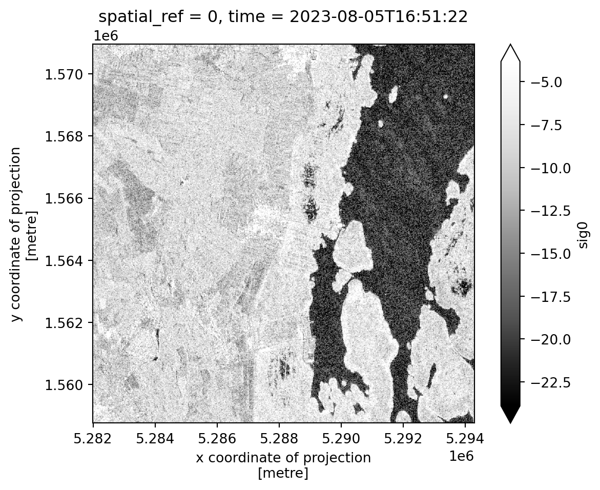
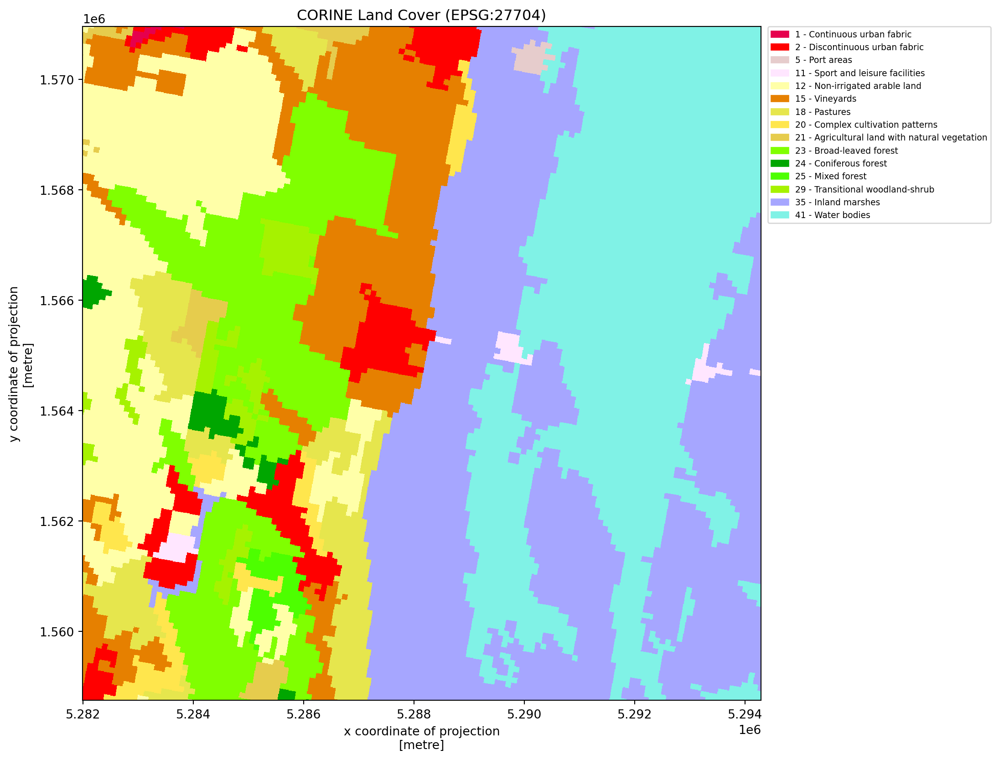
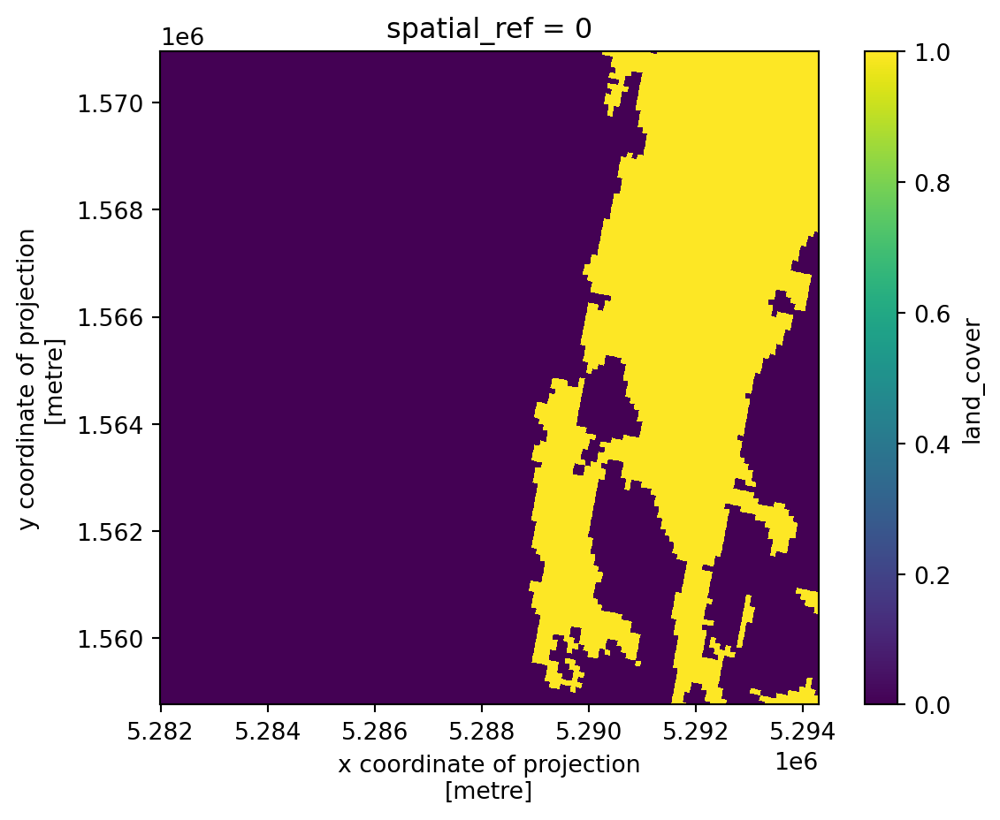
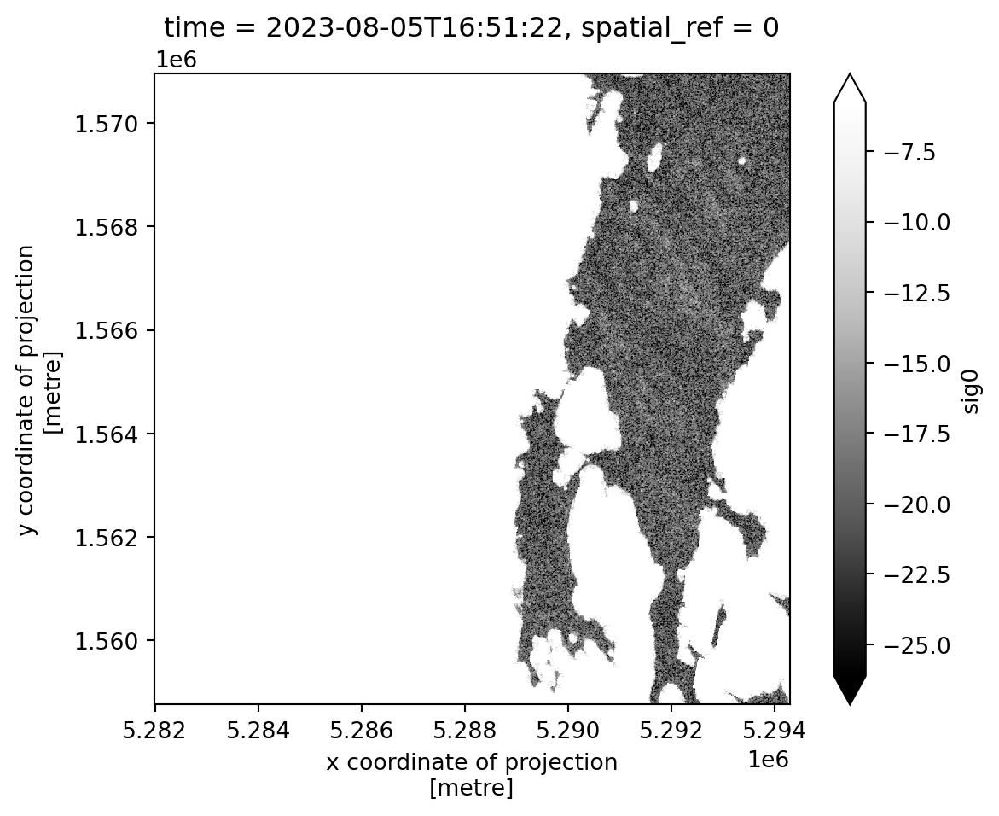
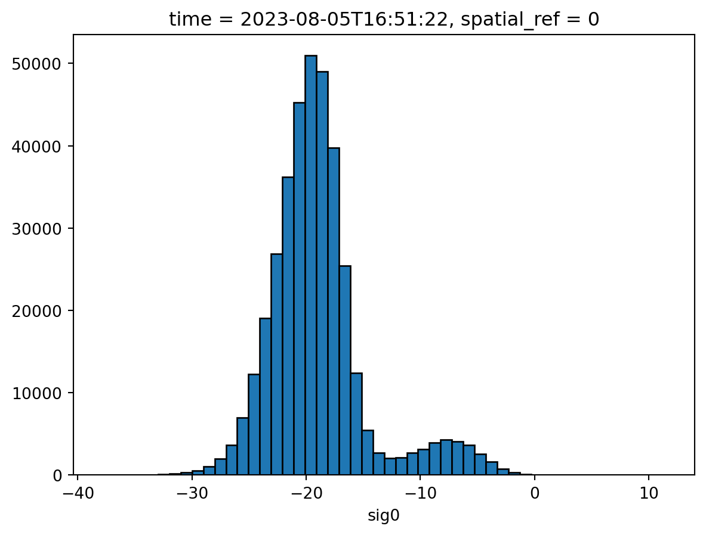

import numpy as np
import pandas as pd
import xarray as xr
import rasterio
import rioxarray # noqa
from shapely.geometry import box
from shapely import affinity
import json
from functools import partial
from pathlib import Path
import matplotlib.pyplot as plt
import matplotlib.patches as mpatches
from matplotlib.colors import ListedColormap, BoundaryNorm
import holoviews as hv
from holoviews.streams import RangeXYIn this notebook, we will investigate the varying backscatter values associated with different land surfaces like water bodies, forests, grasslands and urban areas. We will use backscatter data from the Sentinel-1 satellite and we will utilize the CORINE Land Cover dataset to classify and extrapolate these surfaces, enabling us to analyze how different land cover types influence backscatter responses.
6.1 Load Sentinel-1 Data
For our analysis we are using sigma naught backscatering data from Sentinel-1. The images we are analyzing cover the region south of Vienna and west of Neusiedlersee Lake. We load the data and and apply again a preprocessing function. Here we extract the scaling factor and the date the image was taken from the metadata. We will focus our attention to a smaller area containing a part of the Neusiedlersee Lake and its surrounding land. The obtainedxarray dataset and is then converted to an array, because we only have one variable, the VV backscatter values.
data_path = Path("~/shared/datasets/rs/sentinel-1/neusiedler").expanduser()
def _preprocess(x, bbox):
"""
Preprocess file.
Parameters
----------
x : xarray.Dataset
xlims: tuple
ylims: tuple
Returns
-------
xarray.Dataset
"""
file = x.encoding["source"]
with rasterio.open(file) as src:
scale_factor = pd.to_numeric(src.tags().get("scale_factor"))
time_value = pd.to_datetime(src.tags().get("time_begin"))
x = x / scale_factor
x = x.assign_coords(time=time_value).expand_dims("time")
x = x.rio.clip_box(*bbox, crs="EPSG:4326")
return x.rename({"band_data": "sig0"}).squeeze("band").drop_vars("band")
bbox = box(16.6, 47.7, 16.75, 47.8)
partial_func = partial(_preprocess, bbox=bbox.bounds)
sig0_ds = xr.open_mfdataset(
data_path.glob("*.tif"),
engine="rasterio",
combine="nested",
concat_dim="time",
preprocess=partial_func,
).sortby("time")
sig0_da = sig0_ds.sig0
sig0_da<xarray.DataArray 'sig0' (time: 8, y: 1221, x: 1230)> Size: 96MB
dask.array<getitem, shape=(8, 1221, 1230), dtype=float64, chunksize=(1, 1, 1230), chunktype=numpy.ndarray>
Coordinates:
* x (x) float64 10kB 5.282e+06 5.282e+06 ... 5.294e+06 5.294e+06
* y (y) float64 10kB 1.571e+06 1.571e+06 ... 1.559e+06 1.559e+06
* time (time) datetime64[ns] 64B 2023-08-05T16:51:22 ... 2023-10-28...
spatial_ref int64 8B 0Let’s have a look at the data by plotting the first timeslice.
sig0_da.isel(time=0).plot(robust=True, cmap="Greys_r").axes.set_aspect("equal")
6.2 Load CORINE Landcover Data
We will load the CORINE Land Cover, which is a pan-European land cover and land use inventory with 44 thematic classes. The resolution of this classification is 100 by 100m and the file was created in 2018 (CORINE Land Cover).
Remember previous notebooks when comparing variables. Lets have a look at some of the metadata of our dataset.
corine_path = Path("~/shared/datasets/rs/corine").expanduser()
def print_raster(raster, name):
"""
Print Raster Metadata
Parameters
----------
raster: xarray.DataArray|xarray.DataSet
raster to process
y: string
name of product
"""
print(
f"{name} Raster: \n----------------\n"
f"resolution: {raster.rio.resolution()} {raster.rio.crs.units_factor}\n" # noqa
f"bounds: {raster.rio.bounds()}\n"
f"CRS: {raster.rio.crs}\n"
)
bbox = affinity.scale(bbox, xfact=1.2, yfact=1.2)
cor_da = (
xr.open_mfdataset(corine_path.glob("*.tif"), engine="rasterio")
.rename({"band_data": "land_cover"})["land_cover"]
.squeeze()
.rio.clip_box(*bbox.bounds, crs="EPSG:4326")
)
cor_da<xarray.DataArray 'land_cover' (y: 146, x: 147)> Size: 86kB
dask.array<getitem, shape=(146, 147), dtype=float32, chunksize=(81, 116), chunktype=numpy.ndarray>
Coordinates:
band int64 8B 1
* x (x) float64 1kB 4.814e+06 4.814e+06 ... 4.828e+06 4.828e+06
* y (y) float64 1kB 2.767e+06 2.767e+06 ... 2.753e+06 2.753e+06
spatial_ref int64 8B 0
Attributes:
DataType: Thematic
AREA_OR_POINT: Area
RepresentationType: THEMATIC
STATISTICS_COVARIANCES: 136.429646247598
STATISTICS_MAXIMUM: 48
STATISTICS_MEAN: 25.753373398066
STATISTICS_MINIMUM: 1
STATISTICS_SKIPFACTORX: 1
STATISTICS_SKIPFACTORY: 1
STATISTICS_STDDEV: 11.680310194836print_raster(sig0_da, "Sentinel-1")Sentinel-1 Raster:
----------------
resolution: (10.0, -10.0) ('metre', 1.0)
bounds: (5281990.0, 1558750.0, 5294290.0, 1570960.0)
CRS: EPSG:27704
print_raster(cor_da, "Corine Land Cover")Corine Land Cover Raster:
----------------
resolution: (100.0, -100.0) ('metre', 1.0)
bounds: (4813700.0, 2752700.0, 4828400.0, 2767300.0)
CRS: PROJCS["ETRS89-extended / LAEA Europe",GEOGCS["ETRS89",DATUM["European_Terrestrial_Reference_System_1989",SPHEROID["GRS 1980",6378137,298.257222101004,AUTHORITY["EPSG","7019"]],AUTHORITY["EPSG","6258"]],PRIMEM["Greenwich",0],UNIT["degree",0.0174532925199433,AUTHORITY["EPSG","9122"]],AUTHORITY["EPSG","4258"]],PROJECTION["Lambert_Azimuthal_Equal_Area"],PARAMETER["latitude_of_center",52],PARAMETER["longitude_of_center",10],PARAMETER["false_easting",4321000],PARAMETER["false_northing",3210000],UNIT["metre",1],AXIS["Easting",EAST],AXIS["Northing",NORTH],AUTHORITY["EPSG","3035"]]
The long name for CRS corresponds to the grid (EPSG:3035). We will again use rioxarray to reproject_match to convert the CORINE Land Cover map in the desired projection and resolution. The CORINE Land Cover is originally given as integer values. Hence we use the default nearest neighbour method for resampling.
cor_da = cor_da.rio.reproject_match(sig0_da)
cor_da = cor_da.assign_coords({"x": sig0_da.x, "y": sig0_da.y})
cor_da<xarray.DataArray 'land_cover' (y: 1221, x: 1230)> Size: 6MB
array([[12., 12., 12., ..., 41., 41., 41.],
[12., 12., 12., ..., 41., 41., 41.],
[12., 12., 12., ..., 41., 41., 41.],
...,
[ 2., 2., 2., ..., 41., 41., 41.],
[ 2., 2., 2., ..., 41., 41., 41.],
[ 2., 2., 2., ..., 41., 41., 41.]], dtype=float32)
Coordinates:
band int64 8B 1
spatial_ref int64 8B 0
* x (x) float64 10kB 5.282e+06 5.282e+06 ... 5.294e+06 5.294e+06
* y (y) float64 10kB 1.571e+06 1.571e+06 ... 1.559e+06 1.559e+06
Attributes:
DataType: Thematic
AREA_OR_POINT: Area
RepresentationType: THEMATIC
STATISTICS_COVARIANCES: 136.429646247598
STATISTICS_MAXIMUM: 48
STATISTICS_MEAN: 25.753373398066
STATISTICS_MINIMUM: 1
STATISTICS_SKIPFACTORX: 1
STATISTICS_SKIPFACTORY: 1
STATISTICS_STDDEV: 11.6803101948366.2.1 Colormapping and Encoding
For the different land cover types we use the official color encoding which can be found in CORINE Land Cover. The color mapping is stored in a json file under assets.
# Load encoding
with open("../assets/06_color_mapping.json", "r") as f:
color_mapping_data = json.load(f)
# Get mapping
color_mapping = {item["value"]: item for item in
color_mapping_data["land_cover"]}
# Create cmap and norm for plotting
colors = [info["color"] for info in color_mapping.values()]
categories = [info["value"] for info in color_mapping.values()]
cmap = ListedColormap(colors)
norm = BoundaryNorm(categories + [max(categories) + 1], len(categories))Now we can plot the CORINE Land Cover dataset.
# Get landcover codes present in the image
present_landcover_codes = np.unique(cor_da.values[~np.isnan(cor_da.values)].
astype(int))
# Get colors + text for legend
handles = [
mpatches.Patch(
color=info["color"], label=(f'{info["value"]} - ' + (info["label"]))
)
for info in color_mapping.values()
if info["value"] in present_landcover_codes
]
# Create the plot
cor_da.plot(figsize=(10, 10), cmap=cmap, norm=norm, add_colorbar=False).\
axes.set_aspect("equal")
plt.legend(
handles=handles,
bbox_to_anchor=(1.01, 1),
loc="upper left",
borderaxespad=0,
fontsize=7,
)
plt.title("CORINE Land Cover (EPSG:27704)")Text(0.5, 1.0, 'CORINE Land Cover (EPSG:27704)')
Now we are ready to merge the backscatter data (sig0_da) with the land cover dataset (cor_da) to have one dataset combining all data.
var_ds = xr.merge([sig0_da, cor_da]).drop_vars("band").compute()
var_ds<xarray.Dataset> Size: 102MB
Dimensions: (x: 1230, y: 1221, time: 8)
Coordinates:
* x (x) float64 10kB 5.282e+06 5.282e+06 ... 5.294e+06 5.294e+06
* y (y) float64 10kB 1.571e+06 1.571e+06 ... 1.559e+06 1.559e+06
* time (time) datetime64[ns] 64B 2023-08-05T16:51:22 ... 2023-10-28...
spatial_ref int64 8B 0
Data variables:
sig0 (time, y, x) float64 96MB -6.99 -7.32 -8.78 ... -14.32 -14.22
land_cover (y, x) float32 6MB 12.0 12.0 12.0 12.0 ... 41.0 41.0 41.0 41.06.3 Backscatter Variability
With this combined dataset we can study backscatter variability in relation to natural media. For example we can look at the backscatter variability for water by clipping the dataset to only contain the land cover class water, like so:
# 41 = encoded value for water bodies
waterbodies_mask = var_ds.land_cover == 41
waterbodies_mask.plot().axes.set_aspect("equal")
This gives use backscatter values over water only.
waterbodies_sig0 = var_ds.sig0.isel(time=0).where(waterbodies_mask)
waterbodies_sig0.plot(robust=True, cmap="Greys_r").axes.set_aspect("equal")
To get an idea of the variability we can create a histogram. Radar backscatter from water bodies fluctuates with surface roughness, which changes with wind conditions, creating spatial and temporal variations in signal intensity.
waterbodies_sig0.plot.hist(bins=50, edgecolor="black")(array([5.0000e+00, 5.0000e+00, 8.0000e+00, 1.4000e+01, 3.5000e+01,
7.8000e+01, 1.5600e+02, 3.0500e+02, 5.4000e+02, 1.0380e+03,
1.9550e+03, 3.6850e+03, 6.9910e+03, 1.2269e+04, 1.9088e+04,
2.6859e+04, 3.6217e+04, 4.5276e+04, 5.0939e+04, 4.9020e+04,
3.9729e+04, 2.5400e+04, 1.2426e+04, 5.4390e+03, 2.6990e+03,
2.0500e+03, 2.1330e+03, 2.6890e+03, 3.1490e+03, 3.9510e+03,
4.2970e+03, 4.1110e+03, 3.6350e+03, 2.5900e+03, 1.6020e+03,
7.5000e+02, 3.5200e+02, 1.2300e+02, 5.6000e+01, 3.7000e+01,
2.8000e+01, 2.1000e+01, 1.3000e+01, 9.0000e+00, 1.0000e+01,
8.0000e+00, 1.0000e+01, 5.0000e+00, 6.0000e+00, 4.0000e+00]),
array([-37.91 , -36.9202, -35.9304, -34.9406, -33.9508, -32.961 ,
-31.9712, -30.9814, -29.9916, -29.0018, -28.012 , -27.0222,
-26.0324, -25.0426, -24.0528, -23.063 , -22.0732, -21.0834,
-20.0936, -19.1038, -18.114 , -17.1242, -16.1344, -15.1446,
-14.1548, -13.165 , -12.1752, -11.1854, -10.1956, -9.2058,
-8.216 , -7.2262, -6.2364, -5.2466, -4.2568, -3.267 ,
-2.2772, -1.2874, -0.2976, 0.6922, 1.682 , 2.6718,
3.6616, 4.6514, 5.6412, 6.631 , 7.6208, 8.6106,
9.6004, 10.5902, 11.58 ]),
<BarContainer object of 50 artists>)
6.4 Variability over Time
Next we will look at the changes in variability in backscatter values over time for each of the CORINE Land Cover types. We do this by creating the following interactive plot. We can spot that backscatter in agricultural fields varies due to seasonal cycles like planting, growing, and harvesting, each of which changes vegetation structure. Changes in backscatter are strongly related to soil moisture content from irrigation or rainfall. Ultimately, phenological stages of crops and canopy moisture dynamics can affect the backscatter signal.
hv.extension("bokeh")
robust_min = var_ds.sig0.quantile(0.02).item()
robust_max = var_ds.sig0.quantile(0.98).item()
bin_edges = [
i + j * 0.5
for i in range(int(robust_min) - 2, int(robust_max) + 2)
for j in range(2)
]
land_cover = {"\xa0\xa0\xa0 Complete Land Cover": 1}
land_cover.update(
{
f"{int(value): 02} {color_mapping[value]['label']}": int(value)
for value in present_landcover_codes
}
)
time = var_ds.sig0["time"].values
rangexy = RangeXY()
def load_image(time, land_cover, x_range, y_range):
"""
Callback Function Landcover.
Parameters
----------
time: panda.datatime
time slice
landcover: int
land cover type
x_range: array_like
longitude range
y_range: array_like
latitude range
Returns
-------
holoviews.Image
"""
if land_cover == "\xa0\xa0\xa0 Complete Land Cover":
sig0_selected_ds = var_ds.sig0.sel(time=time)
else:
land_cover_value = int(land_cover.split()[0])
mask_ds = var_ds.land_cover == land_cover_value
sig0_selected_ds = var_ds.sig0.sel(time=time).where(mask_ds)
hv_ds = hv.Dataset(sig0_selected_ds)
img = hv_ds.to(hv.Image, ["x", "y"])
if x_range and y_range:
img = img.select(x=x_range, y=y_range)
return hv.Image(img)
dmap = (
hv.DynamicMap(load_image, kdims=["Time", "Landcover"], streams=[rangexy])
.redim.values(Time=time, Landcover=land_cover)
.hist(normed=True, bins=bin_edges)
)
image_opts = hv.opts.Image(
cmap="Greys_r",
colorbar=True,
tools=["hover"],
clim=(robust_min, robust_max),
aspect="equal",
framewise=False,
frame_height=500,
frame_width=500,
)
hist_opts = hv.opts.Histogram(width=350, height=555)
dmap.opts(image_opts, hist_opts)![](data:image/png;base64,iVBORw0KGgoAAAANSUhEUgAAAEAAAABACAYAAACqaXHeAAAABHNCSVQICAgIfAhkiAAAAAlwSFlz
AAAB+wAAAfsBxc2miwAAABl0RVh0U29mdHdhcmUAd3d3Lmlua3NjYXBlLm9yZ5vuPBoAAA6zSURB
VHic7ZtpeFRVmsf/5966taWqUlUJ2UioBBJiIBAwCZtog9IOgjqACsogKtqirT2ttt069nQ/zDzt
tI4+CrJIREFaFgWhBXpUNhHZQoKBkIUASchWla1S+3ar7r1nPkDaCAnZKoQP/D7mnPOe9/xy76n3
nFSAW9ziFoPFNED2LLK5wcyBDObkb8ZkxuaoSYlI6ZcOKq1eWFdedqNzGHQBk9RMEwFAASkk0Xw3
ETacDNi2vtvc7L0ROdw0AjoSotQVkKSvHQz/wRO1lScGModBFbDMaNRN1A4tUBCS3lk7BWhQkgpD
lG4852/+7DWr1R3uHAZVQDsbh6ZPN7CyxUrCzJMRouusj0ipRwD2uKm0Zn5d2dFwzX1TCGhnmdGo
G62Nna+isiUqhkzuKrkQaJlPEv5mFl2fvGg2t/VnzkEV8F5ioioOEWkLG86fvbpthynjdhXYZziQ
x1hC9J2NFyi8vCTt91Fh04KGip0AaG9zuCk2wQCVyoNU3Hjezee9bq92duzzTmxsRJoy+jEZZZYo
GTKJ6SJngdJqAfRzpze0+jHreUtPc7gpBLQnIYK6BYp/uGhw9YK688eu7v95ysgshcg9qSLMo3JC
4jqLKQFBgdKDPoQ+Pltb8dUyQLpeDjeVgI6EgLIQFT5tEl3rn2losHVsexbZ3EyT9wE1uGdkIPcy
BGxn8QUq1QrA5nqW5i2tLqvrrM9NK6AdkVIvL9E9bZL/oyfMVd/jqvc8LylzRBKDJSzIExwhQzuL
QYGQj4rHfFTc8mUdu3E7yoLtbTe9gI4EqVgVkug2i5+uXGo919ixbRog+3fTbQ8qJe4ZOYNfMoTI
OoshUNosgO60AisX15aeI2PSIp5KiFLI9ubb1vV3Qb2ltwLakUCDAkWX7/nHKRmmGIl9VgYsUhJm
2NXjKYADtM1ygne9QQDIXlk49FBstMKx66D1v4+XuQr7vqTe0VcBHQlRWiOCbmmSYe2SqtL6q5rJ
zsTb7lKx3FKOYC4DoqyS/B5bvLPxvD9Qtf6saxYLQGJErmDOdOMr/zo96km1nElr8bmPOBwI9COv
HnFPRIwmkSOv9kcAS4heRsidOkpeWBgZM+UBrTFAXNYL5Vf2ii9c1trNzpYdaoVil3WIc+wdk+gQ
noie3ecCcxt9ITcLAPWt/laGEO/9U6PmzZkenTtsSMQ8uYywJVW+grCstAvCIaAdArAsIWkRDDs/
KzLm2YcjY1Lv0UdW73HabE9n6V66cxSzfEmuJssTpKGVp+0vHq73FwL46eOjpMpbRAnNmJFrGJNu
Ukf9Yrz+3rghiumCKNXXWPhLYcjxGsIpoCMsIRoFITkW8AuyM8jC1+/QLx4bozCEJIq38+1rtpR6
V/yzb8eBlRb3fo5l783N0CWolAzJHaVNzkrTzlEp2bQ2q3TC5gn6wpnoQAmwSiGh2GitnTmVMc5O
UyfKWUKCIsU7+fZDKwqdT6DDpvkzAX4/+AMFjk0tDp5GRXLpQ2MUmhgDp5gxQT8+Y7hyPsMi8uxF
71H0oebujHALECjFKaW9Lm68n18wXp2kVzIcABytD5iXFzg+WVXkegpAsOOYziqo0OkK76GyquC3
ltZAzMhhqlSNmmWTE5T6e3IN05ITFLM4GdN0vtZ3ob8Jh1NAKXFbm5PtLU/eqTSlGjkNAJjdgn/N
aedXa0tdi7+t9G0FIF49rtMSEgAs1kDLkTPO7ebm4IUWeyh1bKomXqlgMG6kJmHcSM0clYLJ8XtR
1GTnbV3F6I5wCGikAb402npp1h1s7LQUZZSMIfALFOuL3UUrfnS8+rez7v9qcold5tilgHbO1fjK
9ubb17u9oshxzMiUBKXWqJNxd+fqb0tLVs4lILFnK71H0Ind7uiPgACVcFJlrb0tV6DzxqqTIhUM
CwDf1/rrVhTa33/3pGPxJYdQ2l2cbgVcQSosdx8uqnDtbGjh9SlDVSMNWhlnilfqZk42Th2ZpLpf
xrHec5e815zrr0dfBZSwzkZfqsv+1FS1KUknUwPARVvItfKUY+cn57yP7qv07UE3p8B2uhUwLk09
e0SCOrK+hbdYHYLjRIl71wWzv9jpEoeOHhGRrJAzyEyNiJuUqX0g2sBN5kGK6y2Blp5M3lsB9Qh4
y2Ja6x6+i0ucmKgwMATwhSjdUu49tKrQ/pvN5d53ml2CGwCmJipmKjgmyuaXzNeL2a0AkQ01Th5j
2DktO3Jyk8f9vcOBQHV94OK+fPumJmvQHxJoWkaKWq9Vs+yUsbq0zGT1I4RgeH2b5wef7+c7bl8F
eKgoHVVZa8ZPEORzR6sT1BzDUAD/d9F78e2Tzv99v8D+fLVTqAKAsbGamKey1Mt9Ann4eH3gTXTz
idWtAJ8PQWOk7NzSeQn/OTHDuEikVF1R4z8BQCy+6D1aWRfY0tTGG2OM8rRoPaeIj5ZHzJxszElN
VM8K8JS5WOfv8mzRnQAKoEhmt8gyPM4lU9SmBK1MCQBnW4KONT86v1hZ1PbwSXPw4JWussVjtH9Y
NCoiL9UoH/6PSu8jFrfY2t36erQHXLIEakMi1SydmzB31h3GGXFDFNPaK8Rme9B79Ixrd0WN+1ij
NRQ/doRmuFLBkHSTOm5GruG+pFjFdAmorG4IXH1Qua6ASniclfFtDYt+oUjKipPrCQB7QBQ2lrgP
fFzm+9XWUtcqJ3/5vDLDpJ79XHZk3u8nGZ42qlj1+ydtbxysCezrydp6ugmipNJ7WBPB5tydY0jP
HaVNzs3QzeE4ZpTbI+ZbnSFPbVOw9vsfnVvqWnirPyCNGD08IlqtYkh2hjZ5dErEQzoNm+6ykyOt
Lt5/PQEuSRRKo22VkydK+vvS1XEKlhCJAnsqvcVvH7f/ZU2R67eXbMEGAMiIV5oWZWiWvz5Fv2xG
sjqNJQRvn3Rs2lji/lNP19VjAQDgD7FHhujZB9OGqYxRkZxixgRDVlqS6uEOFaJUVu0rPFzctrnF
JqijImVp8dEKVWyUXDk92zAuMZ6bFwpBU1HrOw6AdhQgUooChb0+ItMbWJitSo5Ws3IAOGEOtL53
0vHZih9sC4vtofZ7Qu6523V/fmGcds1TY3V36pUsBwAbSlxnVh2xLfAD/IAIMDf7XYIkNmXfpp2l
18rkAJAy9HKFaIr/qULkeQQKy9zf1JgDB2uaeFNGijo5QsUyacNUUTOnGO42xSnv4oOwpDi1zYkc
efUc3I5Gk6PhyTuVKaOGyLUAYPGIoY9Pu/atL/L92+4q9wbflRJ2Trpm/jPjdBtfnqB/dIThcl8A
KG7hbRuKnb8qsQsVvVlTrwQAQMUlf3kwJI24Z4JhPMtcfng5GcH49GsrxJpGvvHIaeem2ma+KSjQ
lIwUdYyCY8j4dE1KzijNnIP2llF2wcXNnsoapw9XxsgYAl6k+KzUXbi2yP3KR2ecf6z3BFsBICdW
nvnIaG3eHybqX7vbpEqUMT+9OL4Qpe8VON7dXuFd39v19FoAABRVePbGGuXTszO0P7tu6lghUonE
llRdrhArLvmKdh9u29jcFiRRkfLUxBiFNiqSU9icoZQHo5mYBI1MBgBH6wMNb+U7Pnw337H4gi1Y
ciWs+uks3Z9fztUvfzxTm9Ne8XXkvQLHNytOOZeiD4e0PgkAIAYCYknKUNUDSXEKzdWNpnil7r4p
xqkjTarZMtk/K8TQ6Qve78qqvXurGwIJqcOUKfUWHsm8KGvxSP68YudXq4pcj39X49uOK2X142O0
Tz5/u/7TVybqH0rSya6ZBwD21/gubbrgWdDgEOx9WUhfBaC2ibcEBYm7a7x+ukrBMNcEZggyR0TE
T8zUPjikQ4VosQZbTpS4vqizBKvqmvjsqnpfzaZyx9JPiz1/bfGKdgD45XB1zoIMzYbfTdS/NClB
Gct0USiY3YL/g0LHy/uq/Ef6uo5+n0R/vyhp17Klpge763f8rMu6YU/zrn2nml+2WtH+Z+5IAAFc
2bUTdTDOSNa9+cQY7YLsOIXhevEkCvzph7a8laecz/Un/z4/Ae04XeL3UQb57IwU9ZDr9UuKVajv
nxp1+1UVIo/LjztZkKH59fO3G/JemqCfmaCRqbqbd90ZZ8FfjtkfAyD0J/9+C2h1hDwsSxvGjNDc
b4zk5NfrSwiQblLHzZhg+Jf4aPlUwpDqkQqa9nimbt1/TDH8OitGMaQnj+RJS6B1fbF7SY1TqO5v
/v0WAADl1f7zokgS7s7VT2DZ7pegUjBM7mjtiDZbcN4j0YrHH0rXpCtY0qPX0cVL0rv5jv/ZXend
0u/EESYBAFBU4T4Qa5TflZOhTe7pmKpaP8kCVUVw1+yhXfJWvn1P3hnXi33JsTN6PnP3hHZ8Z3/h
aLHzmkNPuPj7Bc/F/Q38CwjTpSwQXgE4Vmwry9tpfq/ZFgqFMy4AVDtCvi8rvMvOmv0N4YwbVgEA
sPM72/KVnzfspmH7HQGCRLG2yL1+z8XwvPcdCbsAANh+xPzstgMtxeGKt+6MK3/tacfvwhWvIwMi
oKEBtm0H7W+UVfkc/Y1V0BhoPlDr/w1w/eu1vjIgAgDg22OtX6/eYfnEz/focrZTHAFR+PSs56/7
q32nwpjazxgwAQCwcU/T62t3WL7r6/jVRa6/byp1rei+Z98ZUAEAhEPHPc8fKnTU9nbgtnOe8h0l
9hcGIqmODLQAHCy2Xti6v/XNRivf43f4fFvIteu854+VHnR7q9tfBlwAAGz+pnndB9vM26UebAe8
SLHujPOTPVW+rwY+sxskAAC2HrA8t2Vvc7ffP1r9o+vwR2dcr92InIAbKKC1FZ5tB1tf+/G8p8sv
N/9Q5zd/XR34LYCwV5JdccMEAMDBk45DH243r/X4xGvqxFa/GNpS7n6rwOwNWwHVE26oAADYurf1
zx/utOzt+DMKYM0p17YtZZ5VNzqfsB2HewG1WXE8PoZ7gOclbTIvynZf9JV+fqZtfgs/8F/Nu5rB
EIBmJ+8QRMmpU7EzGRsf2FzuePqYRbzh/zE26EwdrT10f6r6o8HOYzCJB9Dpff8tbnGLG8L/A/WE
roTBs2RqAAAAAElFTkSuQmCC)
![]()